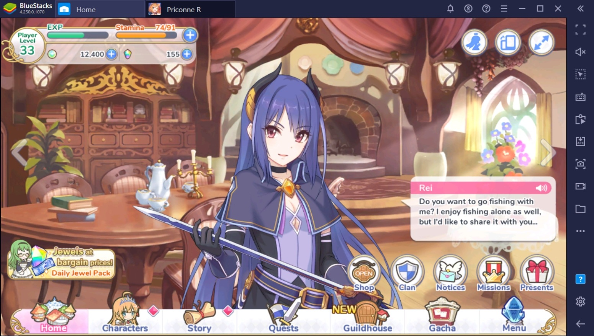

Princess Connect! Re:Dive is a Japanese role-playing video game developed by Cygames. It was released in Japan on February 15, 2018 for Android and iOS, and on May 22, 2018 for Microsoft Windows via DMM Games. Mobile version would later be released in other regions.
Gameplay
Princess Connect! Re:Dive is a real-time action role-playing game. Players can form a party of up to five members to participate in various modes such as main quests and player versus player (PvP) arena modes. New characters can be obtained via a gacha mechanic or can be exchanged with character-specific Memory Pieces (the latter is not possible for event-exclusive characters). Players are also able to form clans to qualify for participation in Clan Battles, which are similar to raid battles in a typical massively multiplayer online role-playing game, or freely chat with one another using text or in-game emojis in the clan room. Every playable character in the game has one Union Burst (a powerful skill which can be manually activated by the player as soon as their Union Burst Meter, also known as TP in-game, is charged), two Skills (which are automatically activated at predetermined times based on character), an EX Skill (which are stat-gaining skills that are activated on the start of each battle) and an automatic regular attack. Players generally have no control over the activation of characters' skills and attacks with the exception of a Union Burst. However, all PvP arena modes are strictly on autoplay, where the character's Union Burst is activated as soon as their TP is fully charged.
Character gachas are 1 for 150 Jewels or 10 for 1500 Jewels with one 2☆ guaranteed. The Yellow button is 50 Jewel for 1 gacha daily however you need PAID JEWELS to use this. All the Jewels you gain from gameplay are FREE JEWELS, you can only get PAID JEWELS by buying them with real money. Note that a monthly subscription gives 500 PAID JEWELS once and 50 FREE JEWELS daily. Equipment Gacha, spin it for 10 free Equipment. Resets twice a day at 15:00 and 20:00 (UTC).
Story

After the events of Princess Connect!, the Twinkle Wish guild ascend the Tower of Sol where they reach the very top and encounter Mana Senri who merged with Minerva. After wiping out Hiyori and Rei, Yuuki is severely injured and shields Yui from an attack before he is engulfed by Mana's attack. Yuuki awakens in an unknown location and meets Ameth, who seems to be familiar with him. With no time, she sends him down to Landsol where he is given a vague mission that he must do. Upon awakening, Yuuki has lost all memory. He is met by Kokkoro, a girl assigned by Ameth to be his guide on his adventures. Shortly afterwards he meets a swordswoman with a voracious appetite, whom the duo nickname Pecorine, and later a cat-beast race girl Karyl. The group founds the guild Gourmet Edifice with the goal of going on adventures while eating the food that Landsol has to offer. As for Yuuki, he is determined to recover his memories and complete the mission Ameth has in store for him.
Gourmet Edifice is a newly founded guild created by Yuuki, Pecorine, Kokkoro, and Kyarl. Their goal is to explore Landsol and eat all of the delicacies it has to offer, primarily by accepting quests that have to deal with food. Pecorine is the Guild Master. Yuuki A human male in the series who serves as the player stand-in in game. In Princess Connect!, Yuuki was a member of Twinkle Wish, but after the world reset that begins Princess Connect! Re:Dive, Yuuki has lost all memories and instead founds the Gourmet Edifice guild. While losing most of his memories and has regressed to a simpler mind state, he is kind-hearted and brave. He has a mysterious power granted to him that allows him to empower his allies with tremendous power. In real life, Yuuki is well acquainted with most of the girls of Princess Connect! Re:Dive to a certain extent.